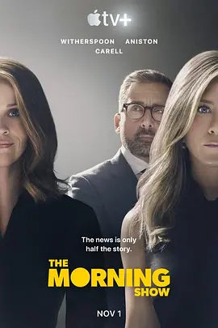

8.6
早间新闻 第一季
The Morning Show Season 1
2019
美国
评分 8.6
导演:
米密·莱德 / 大卫·弗兰科尔 / 琳·谢尔顿 / 罗克珊·道森 / 塔克·盖茨
演员:
詹妮弗·安妮斯顿 / 瑞茜·威瑟斯彭 / 比利·克鲁德普 / 史蒂夫·卡瑞尔 / 古古·姆巴塔-劳
类型:
剧情,都市
剧情简介
清晨的灯光刚从演播室玻璃墙外洒入，主持人们已经在妆台前为直播做最后准备。早间新闻节目看似从容稳定，但在镜头背后，团队正经历着一场突如其来的震荡。随着一位资深主播被指控不当行为，栏目组内部的秩序被彻底打乱，多年来的默契开始出现裂缝。亚历克斯必须在镜头前维持台前镇定，同时在会议室里与高层博弈，争夺她原本稳固的位置。新人记者布拉德利被意外推向聚光灯。她直面权威、不按常规行事的方式，为节目带来新气息，也为自己招来压力。两人在不断摩擦中逐渐交错彼此的轨迹，一边争夺主导权，一边在新闻行业的激烈生态中寻找立足点。制片团队在风暴中努力维持节目正常播出，每一次推拉镜头、每一段交叠的对话，都暗示着内部更深层的紧张。随着舆论外溢、权力重新洗牌，演播室逐渐成为情绪与利益交织的竞技场。角色之间的关系在高强度的工作节奏中不断变化，朋友、对手、盟友之间的界限被推开又重合。故事在不断升级的压力之下展开，让人看到媒体行业光鲜外表后面的真实复杂，也让每一个出现在屏幕中的人物都显得更加立体而脆弱。